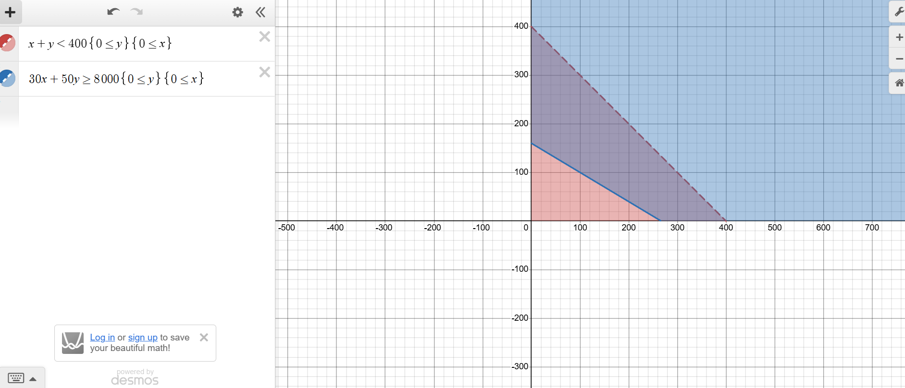

Basically, I replaced l for lawn ticket with x and s for seat ticket with y, and i used that to create 2 inequalities on desmos graphing calculator. With red being the inequality for possible combinations of less than 400 tickets sold, and blue being the inequality for tickets sold to earn at least 8000 dollars, we can see that the 2 inequalities intersect, meaning that there are some combinations of lawn and seat tickets sold that result in earnings of at least 8000 dollars while being less than 400 tickets.
=8000, and they did intersect.">